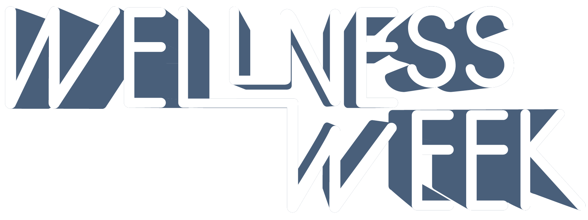
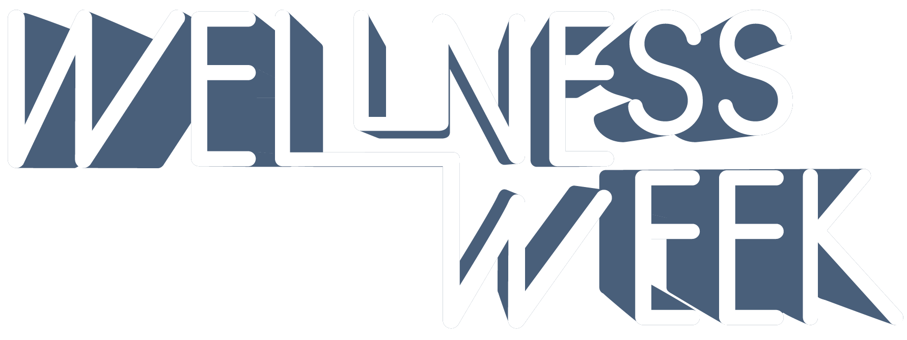

May 3rd - 8th
Join ACM for Change for a week of events promoting Wellbeing within the UTCS Department


All events will be held at https://utexas.zoom.us/my/wellnessweek
Monday 5/3 7:30-8:30 PM: Destress with Yoga | Take a break from studying and join us for a relaxing time of virtual Yoga.
Tuesday 5/4 6-7 PM: Stress Management with CMHC and LWC & Music Share Time | Come learn about stress management and resources from the university, then stay for a fun time of meeting new people and bonding over the music we listen to.
Wednesday 5/5 4-5 PM: Professor Panel | Come engage in a conversation with Dr. Devangi Parikh and Dr. Chand John as they talk about their experiences with mental health and stress.
Thursday 5/6 12-12:30 PM: Failure Resumes with Professors | Join us in a conversation with Dr. Chris Rossbach and Dr. Sarah Abraham as we discuss the importance of setbacks and failures in helping us grow.
Friday 5/7 8-9 PM: Open Mic Night | This will be a safe space for people to share their experiences with Mental Health either anonymously or not. Come to share or just to listen but please respect the privacy of all those who share. Fill out this form to submit an anonymous story beforehand. Feel free to share experiences even if you cannot attend the event.
Saturday 5/8 9 AM-9 PM: Changeathon with Freetail Hackers | Come create change through both technical and idea proposal solutions or just come to learn!
Questions? Comments? Want to join A4C? Email us at a4c@texasacm.org